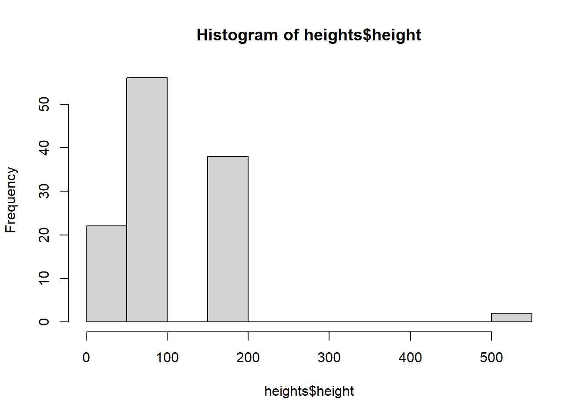
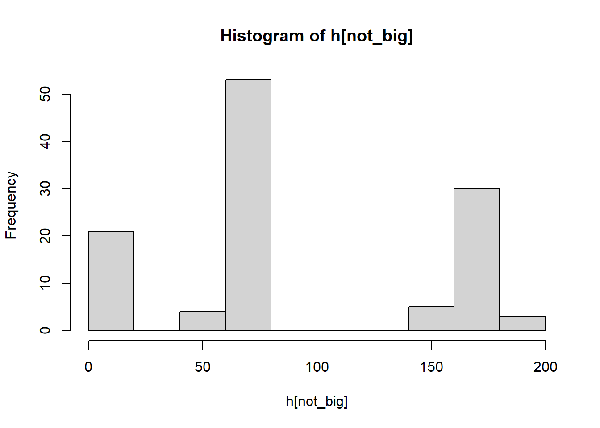

#library(tidyverse)
suppressPackageStartupMessages(suppressWarnings(library(tidyverse)))
library(dplyr)
library(ggplot2)Midterm Notes
Datasci 306
Midterm Thursday 10/9 during lecture
Lecture 1: 8-26
heights <- read_csv("https://ds306.org/data/survey1.csv")
glimpse(heights)Rows: 118
Columns: 3
$ Timestamp <chr> "8/26/2025 7:2…
$ `What is your sex?` <chr> "Male", "Male"…
$ `What is your height? (use whichever units you prefer)` <dbl> 72.00, 170.00,…Vectors
c(1,2,3)[1] 1 2 31:10 [1] 1 2 3 4 5 6 7 8 9 10c(1,2,3)[3][1] 3Operations on Dataframes
#help(glimpse)
glimpse(heights)Rows: 118
Columns: 3
$ Timestamp <chr> "8/26/2025 7:2…
$ `What is your sex?` <chr> "Male", "Male"…
$ `What is your height? (use whichever units you prefer)` <dbl> 72.00, 170.00,…#help(summary)
summary(heights) Timestamp What is your sex?
Length:118 Length:118
Class :character Class :character
Mode :character Mode :character
What is your height? (use whichever units you prefer)
Min. : 0.0017
1st Qu.: 63.8275
Median : 70.0000
Mean : 96.6379
3rd Qu.:163.7500
Max. :511.0000 #df$colName
heights$`What is your height? (use whichever units you prefer)` [1] 72.0000 170.0000 164.0000 6.0000 68.0000 162.0000 1.8500 184.0000
[9] 178.0000 70.0000 178.0000 510.0000 6.0000 73.0000 172.0000 160.0000
[17] 6.0000 6.0000 48.0000 183.0000 71.0000 175.0000 181.0000 165.0000
[25] 511.0000 64.0000 175.0000 1.0000 5.6500 6.2000 64.0000 176.0000
[33] 6.0000 69.0000 1.8900 162.0000 68.0000 175.0000 6.0000 180.0000
[41] 66.0000 64.0000 70.0000 63.0000 71.0000 69.0000 69.0000 67.0000
[49] 5.3000 172.0000 67.0000 165.0000 73.0000 67.0000 6.0000 67.0000
[57] 64.0000 5.4000 65.0000 76.0000 174.0000 68.0000 172.0000 71.0000
[65] 69.0000 176.0000 161.0000 70.0000 60.0000 165.0000 165.0000 163.0000
[73] 157.0000 73.0000 70.0000 68.0000 62.0000 72.0000 5.1100 69.0000
[81] 70.0000 172.0000 156.0000 71.0000 66.0000 1.7000 5.0000 0.0017
[89] 71.0000 65.0000 168.0000 70.0000 70.0000 180.0000 71.0000 66.0000
[97] 160.0000 64.0000 55.0000 5.4000 66.0000 65.0000 173.0000 62.0000
[105] 62.0000 173.0000 5.4000 157.0000 69.0000 63.7700 163.0000 66.0000
[113] 70.0000 171.0000 5.6000 177.0000 70.0000 55.0000Renaming Columns
#og colnames
colnames(heights)[1] "Timestamp"
[2] "What is your sex?"
[3] "What is your height? (use whichever units you prefer)"#Rename Columns
colnames(heights) <- c("timestamp", "sex", "height")
glimpse(heights)Rows: 118
Columns: 3
$ timestamp <chr> "8/26/2025 7:23:17", "8/26/2025 14:51:26", "8/26/2025 14:51:…
$ sex <chr> "Male", "Male", "Female", "Male", "Male", "Female", "Male", …
$ height <dbl> 72.00, 170.00, 164.00, 6.00, 68.00, 162.00, 1.85, 184.00, 17…ncol(heights)[1] 3nrow(heights)[1] 118mean(c(1,2,3))[1] 2#Will return 96.6379 - not under same unit (cm or in),
#too high or too low
mean(heights$height)[1] 96.6379#Hist looks wierd b/c the diff in units
hist(heights$height)
#Reassign so can type faster
h <- heights$height#return a vector of bools
h < 200 [1] TRUE TRUE TRUE TRUE TRUE TRUE TRUE TRUE TRUE TRUE TRUE FALSE
[13] TRUE TRUE TRUE TRUE TRUE TRUE TRUE TRUE TRUE TRUE TRUE TRUE
[25] FALSE TRUE TRUE TRUE TRUE TRUE TRUE TRUE TRUE TRUE TRUE TRUE
[37] TRUE TRUE TRUE TRUE TRUE TRUE TRUE TRUE TRUE TRUE TRUE TRUE
[49] TRUE TRUE TRUE TRUE TRUE TRUE TRUE TRUE TRUE TRUE TRUE TRUE
[61] TRUE TRUE TRUE TRUE TRUE TRUE TRUE TRUE TRUE TRUE TRUE TRUE
[73] TRUE TRUE TRUE TRUE TRUE TRUE TRUE TRUE TRUE TRUE TRUE TRUE
[85] TRUE TRUE TRUE TRUE TRUE TRUE TRUE TRUE TRUE TRUE TRUE TRUE
[97] TRUE TRUE TRUE TRUE TRUE TRUE TRUE TRUE TRUE TRUE TRUE TRUE
[109] TRUE TRUE TRUE TRUE TRUE TRUE TRUE TRUE TRUE TRUE#Removes heights where h < 200 is false
not_big <- h < 200
h[not_big] [1] 72.0000 170.0000 164.0000 6.0000 68.0000 162.0000 1.8500 184.0000
[9] 178.0000 70.0000 178.0000 6.0000 73.0000 172.0000 160.0000 6.0000
[17] 6.0000 48.0000 183.0000 71.0000 175.0000 181.0000 165.0000 64.0000
[25] 175.0000 1.0000 5.6500 6.2000 64.0000 176.0000 6.0000 69.0000
[33] 1.8900 162.0000 68.0000 175.0000 6.0000 180.0000 66.0000 64.0000
[41] 70.0000 63.0000 71.0000 69.0000 69.0000 67.0000 5.3000 172.0000
[49] 67.0000 165.0000 73.0000 67.0000 6.0000 67.0000 64.0000 5.4000
[57] 65.0000 76.0000 174.0000 68.0000 172.0000 71.0000 69.0000 176.0000
[65] 161.0000 70.0000 60.0000 165.0000 165.0000 163.0000 157.0000 73.0000
[73] 70.0000 68.0000 62.0000 72.0000 5.1100 69.0000 70.0000 172.0000
[81] 156.0000 71.0000 66.0000 1.7000 5.0000 0.0017 71.0000 65.0000
[89] 168.0000 70.0000 70.0000 180.0000 71.0000 66.0000 160.0000 64.0000
[97] 55.0000 5.4000 66.0000 65.0000 173.0000 62.0000 62.0000 173.0000
[105] 5.4000 157.0000 69.0000 63.7700 163.0000 66.0000 70.0000 171.0000
[113] 5.6000 177.0000 70.0000 55.0000length(h)[1] 118length(h[not_big])[1] 116hist(h[not_big])